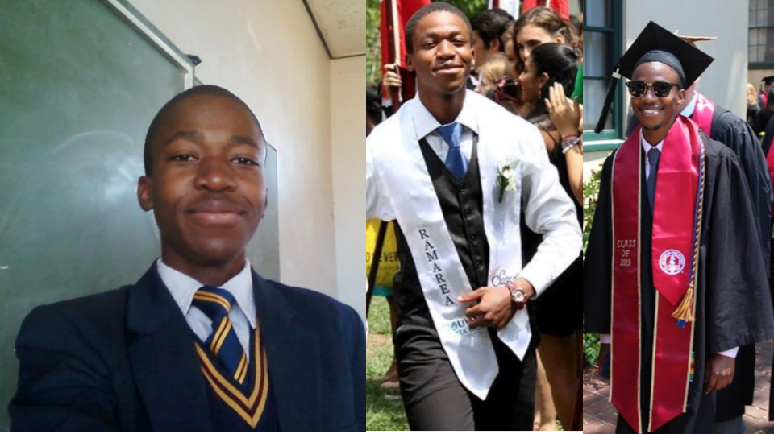

Live → Blog
March 23, 2022

"When I was a young man, I wanted to change the world. I found it was difficult to change the world, so I tried to change my nation. When I found I couldn't change the nation, I began to focus on my town. I couldn't change the town and as an older man, I tried to change my family. Now, as an old man, I realize the only thing I can change is myself, and suddenly I realize that if long ago I had changed myself, I could have made an impact on my family. My family and I could have made an impact on our town. Their impact could have changed the nation and I could indeed have changed the world." - Unknown Monk 1100 AD
"Yesterday I was clever, so I wanted to change the world. Today I am wise, so I am changing myself." - Rumi
I have been incredibly lucky in my life - blessed even. I grew up in a village that taught me I was so intelligent, charismatic, and beautiful that I could be anything in the world, even president of Botswana. My family's lack of political and economic capital in our society was a source of shame for young me, so you can imagine how comforting it was to know that I was perceived to be president material. As I have been on my journey of unlearning and relearning, growth and healing, I have come to conclude that while that belief and dream has gotten me this far, it is not how I want to proceed. From my schools in Kanye, to my time as "an agent of change" at the United World College of Costa Rica, and being a "transformative leader" as a MasterCard Foundation Scholar at Stanford; I have always been made to believe that I should want to change the world. But with more self-awareness, I know my goals in life are far less grandiose.
The belief that I am any more special than my counterparts who I grew up with because of the ease with which academic excellence came my way, is one that was easy to divorce from my self-perception. I have a few relative failures to thank for bringing my feet back to earth: getting an 84.97% instead of the 86.00% required for a Merit pass in my Junior Certificate of Education exams, and getting 47 points (3 A* 2 A 3B 1 C) instead of the 48 points (at least 6A/A*) in my General Certificate of Secondary Education exams - thereby missing Botswana's prestigious Top Achievers Scholarship. While humbling, these relative failures also helped me realize that it was never about having the highest grades. It was about persisting in the direction of my goals and dreams. So when I received a scholarship to attend UWC over city kids whose English accent was spotless, I knew it did not make me smarter than them. When I received the prestigious MasterCard Foundation Scholarship to attend Stanford, I knew there was an element of luck.
Of course all these institutions that I am affiliated with - UWC, MasterCard Scholars Program, and Stanford - reinforced my community's hopes, which I had adopted as my own dream, that I was going to someday become the president. I know the presidency has always been a metaphor for a sense of duty towards a collective national identity. So I did not wait before seeking to fulfill that duty the best way I knew how - investing my efforts in improving the education experiences for students from backgrounds similar to mine back home, funding some small businesses from Kanye as a seed investor, and in general moving heaven and earth to enable the people from back home to get closer to whatever opportunities they were pursuing. With my inexperience, all but one of the businesses failed with no returns. But I am glad to have been a stepping stone, a catalyst for some people who pursued their dreams - the same way others were catalysts for me. I was going to do great things and be famous for it.
But I do not want to be the president. I do not want to change the world or Botswana or Kanye or my family. I want to change me and live my best life. Do not get me wrong, I still have big dreams and ambitions, but they are at a micro level. To use a metaphor from my upcoming book, I am going to jump into the swimming pool with my clothes on and not care. It is time to be the child that these heavy expectations - and other life circumstances - prevented me from becoming. I am going to focus more on the simple things: deepening my spiritual wealth, cultivating mutually enriching community, engaging in intellectually stimulating and conscience reassuring work, and being a good steward for the material endowments bestowed upon me.
I expect externally the changes will not appear too drastic. For one, I will continue to care about the quality education of and access to capital for historically marginalized people. Especially those who are black, are from low-income families, and are women. You probably will no longer be able to read about it on my platforms as I shy away from being publicly known and retreat to being intimately known. My upcoming book shares the story of my life up until recently - what I consider my public life. The next phase is more for me and those who have the courage to know me intimately. I will not erase my online accounts like a few years ago, and indeed you can expect me to post every now and then. As for my community, WhatsApp is where all the lit content will reside.
To everyone who has believed in me and fueled the public persona who wanted to be president, thank you. I would not be at this place to even make this privileged choice. To those who have drawn inspiration from my journey, who might feel betrayed by this pronouncement, this is a reminder that your journey and your dreams are all that should guide where you point your feet. Wishing you all peace and fulfillment.
← Return to Blog